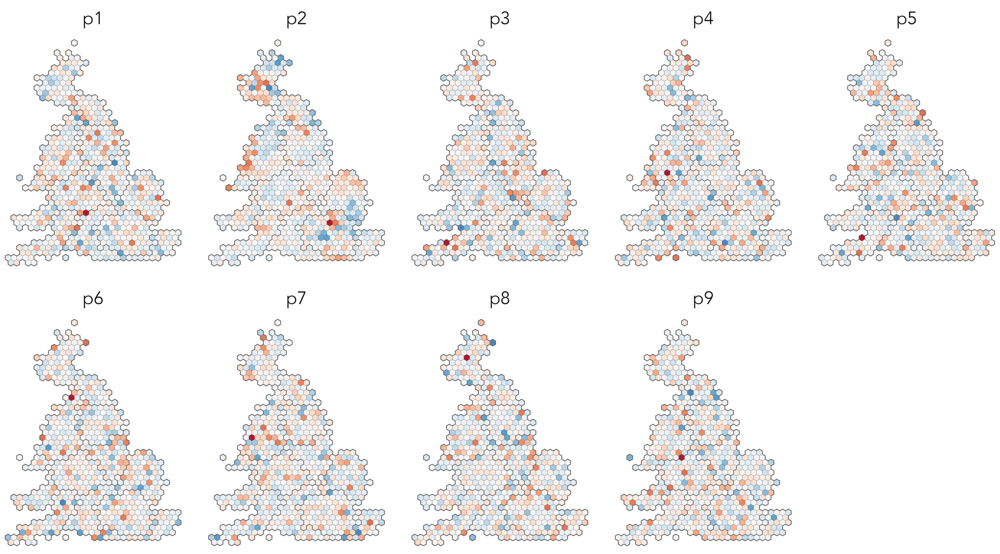

6 Models
By the end of this chapter you should gain the following knowledge and practical skills.
- Be reminded of the basics of linear regression modelling.
- Understand two categories of geographic effect in regression modelling: geographical dependence in values and non-stationarity in processes.
- Learn how linear regression models can be updated to account for and explore these two effects.
- Specify linear regression models in R.
- Apply functional-style programming for working over multiple model outputs.
- Update linear regression models in R with Fixed Effect (FE) and Interaction terms.
-
Extract model outputs and diagnostics in a
tidymanner.
6.1 Introduction
So far the analysis presented in this book has been quite data-driven. Having described data in a consistent way (Chapter 2), visual analysis approaches have been applied to expose structure in datasets, informed by established visualization guidelines. Chapters 4 and 5 involved model building, but these were largely value-free models based on limited prior theory.
This chapter is presented as a worked data analysis: we attend to a well-known dataset with a more explicit and theoretically-informed motivation. We will explore variation in voting behaviour in the UK’s 2016 referendum on leaving the EU. You might remember that whilst there was a slight majority for Leave (51.9%), the vote varied between different parts of the country. There were many theories and explanations offered around for why particular places voted the way they did, often related to the demographic composition of those areas. We will explore whether the sorts of compositional demographic factors discussed vary systematically with area-level Leave voting. Using regression frameworks, we will model the relative effect of each of these compositional factors in structuring variation in the vote and construct data graphics that allow these models and parameters to be considered and evaluated in detail.
This chapter assumes some basic familiarity with linear regression modelling. For a clear and detailed overview, with excellent social science examples, you may wish to consult Bartholomew et al. (2008).
6.2 Concepts
6.2.1 Quantifying and exploring variation
In Figure 6.1 is a map and bar chart displaying total variation in vote shares for Leave in Great Britain (GB), estimated at Parliamentary Constituency level (see Hanretty 2017). The values themselves are the difference in estimated vote shares from an expectation that the Leave vote by constituency, y_{i} our outcome of interest, is uniformly distributed across the country and so equivalent to the overall vote share for Leave, which is 51.9%. Although a slightly contrived formulation, we could express this as an intercept-only linear regression model, where the estimated slope (\beta_{1}) is ‘turned off’ (takes the value 0) and the intercept (\beta_{0}) is the GB average vote share for Leave (\bar{y}):
\begin{align*} y_{i}= \beta_{0} + \beta_{1} + \varepsilon_{i} \end{align*}
So we estimate the Leave vote in each constituency (y_{i}) as a function of:
- \beta_{0}, the intercept, the GB average vote share (\bar{y}) +
- \beta_{1}=0, a negated slope, +
- \varepsilon_{i}, a statistical error term capturing the difference between y_{i}, the observed Leave vote in a constituency, and the unobservable ‘true population’ value of the Leave vote in each constituency
How does this relate to the idea of characterising variation? The length and colour of each bar in Figure 6.1 is scaled according to model residuals: the difference between y_{i}, the observed value, and the expected value of the Leave vote under the uniform model. The sum of these bar lengths is therefore the total variance that we later try to account for by updating our regression model to generate new expected values using information on the demographic composition of constituencies.

Figure 6.1 is similar to the maps that were published widely in press reports in the aftermath of the vote, and demonstrates that there is indeed substantial variation in Leave voting between different parts of the country. The intercept-only model, which assumes a uniform distribution of Leave across the country, consistently underestimates the vote in Scotland and most of London. Outside of this, constituencies voting in smaller proportions than would be expected for Leave are distributed more discretely in the country: the dark red dot with surrounding red area in the east of England is Cambridge and Cambridgeshire, constituencies in Bristol (south west), Manchester and Liverpool (north west), Brighton (south), are also reasonably strong red.
When evaluating the effectiveness of modelled values, there are various checks that can be performed. An obvious one here is whether there is bias in the residuals – whether residuals have structure that suggests they are grouped in a way not captured by the model. Given the motivation behind our analysis it is no surprise that there is a geographic pattern to the residuals in Figure 6.1, but also the non-symmetrical shape of the ‘signed’ bars is instructive. There are more constituencies with positive values than negative, the Leave vote is underestimated by the uniform model for 57% of constituencies, and some constituencies have quite large negative values. The strongest vote for Leave was Boston and Skegness with 76% for Leave, but the strongest for Remain was Hackney North and Stoke Newington 80% for Remain.
6.2.2 Quantifying and exploring co-variation
More interesting still is whether the pattern of variation in Figure 6.1 is correlated with compositional factors that we think explain this variation; and also whether bias or structure in residuals exists even after accounting for these compositional factors.
In Table 6.1 is a list of candidate explanatory variables describing the demographic composition of constituencies. Each variable is expressed as a proportion of the constituency’s population. So the degree educated variable describes the proportion of residents in the constituency educated at least to degree-level. Comparison across these variables is challenging due to the fact that their ranges differ: the EU-born variable ranges from 0.6% to 17%; the white variable from 14% to 98%. There are also obvious ceilings that limit how successful explanatory variables are likely to be at discriminating variation. Common practice for addressing the range problem is to z-score transform the variables so that each value is expressed in standard deviation units from its variable’s mean.
| Census variable | Constituency % |
|---|---|
| post-industrial / knowledge economy | |
| degree-educated | with degrees + |
| professional occupations | ns-sec manager/professional |
| younger adults | adults aged <44 |
| heavy industry | manufacturing and transport |
| diversity/values/outcomes | |
| not good health | reported fair, bad, very bad |
| white | ethnicity white British/Irish |
| Christian | Christian |
| EU-born | EU-born (not UK) |
| metropolitan / 'big city' | |
| own home | own home |
| no car | don't own a car |
Figure 6.2 presents scatterplots from which the extent of linear association between these demographics and Leave voting in each constituency can be inferred. Each dot is a constituency, arranged on the x-axis according to the value of each candidate explanatory variable and the y-axis according to the share of Leave vote. The scatterplots are faceted by explanatory variable and ordered left-to-right and top-to-bottom according to correlation coefficient. The variable most heavily correlated with Leave voting is that measuring levels of degree education: as the share of a constituency’s population educated at least to degree-level increases, the share of Leave vote in that constituency decreases. An association in the same direction, but to a lesser extent, is observed for variables representing similar concepts: professional occupations, younger adults, EU-born, no-car and the reverse for Christian, not-good health and heavy industry.

It is of course possible, and likely, that there is some some autocorrelation in the compositional characteristics of constituencies and Leave voting. Parallel coordinate plots are useful for visually exploring this multivariate correlation. Whereas in scatterplots, observations are represented as points located in x- and y- axes that are orthogonal, in a parallel coordinate plot axes are parallel and the values of an observation encoded via a line connecting the multiple parallel axes, as in Figure 6.3. Each of the thin lines is a constituency coloured according to whether the constituency voted majority Remain (red) or Leave (blue). The first variable encoded is the size of the Leave vote (z-score transformed) and variables are then ordered according to linear association with Leave. Note that we have reversed the polarity of variables such as degree-educated and professional so that we expect more Leave (blue lines) towards the right locations of the parallel axis. That the blue and red lines are reasonably separated suggests that there is autocorrelation in the demographics of Leave and Remain constituencies.

Although parallel coordinate plots enable some aspects of association between multiple variables to be inferred, they have several deficiencies. Association can only really be directly inferred by comparing variables that are immediately adjacent in parallel space; the order of parallel variables can affect the visual appearance and patterns of plots; and relatedly, visual patterns of the plot that are salient may be be incidental to the phenomena being investigated.
6.2.3 Modelling for co-variation
Linear regression provides a framework for systematically describing the associations implied by the scatterplots and parallel coordinate plot, and with respect to the constituency-level variation identified in Figure 6.1. Having seen this new data, the candidate demographic variables in Figure 6.2, we can derive expected values closer to those observed and so better account for constituency-level variation in Leave voting.
To express this in equation form, we update the uniform model such that Leave vote is a function of the candidate explanatory variables. For single-variable linear regression, we might select the proportion of residents educated at least to degree-level ({d_{i1}}):
\begin{align*} y_{i}&= \beta_{0} + \beta_{1}{d_{i1}} + \varepsilon_{i} \\ \end{align*}
So we now estimate the Leave vote in each constituency (y_{i}) as a function of:
- \beta_{0}, the intercept, the GB average vote share (\bar{y}) +
- \beta_{1}=\beta_{1}{d_{i1}}, the slope, indicating in which direction and to what extent degree-educated is associated with Leave, +
- \varepsilon_{i}, the difference between y_{i} (the observed value) and the unobservable ‘true population’ value of the Leave vote in that constituency (statistical error)
There are different algorithms that can be used to estimate these parameters. Most obvious is ordinary least squares (OLS), which aims to minimise the sum of the (squared) residuals between the observed Leave vote in a constituency, y_{i}, and that expected given the association with the degree-educated explanatory variable d_{i1}. Eyeballing the scatterplots in Figure 6.2 we can already infer many of the parameters estimated via OLS regression. Degree-educated is most consistently associated with Leave voting and, according to our linear regression model, explains 60% of the total variation (the sum of bars in Figure 6.1) in constituency-level Leave voting. Also from the scatterplots, especially those associating Leave with degree-educated and professionals, there is a grouping of constituencies where the Leave vote is lower than we might expect given that constituency’s population characteristics – and this is reflected when inspecting the 1D distribution of residuals in histograms (not included here).
It is of course possible, and likely, that some of these variables account for different elements of the variation in the Leave vote than others. You will be aware that the linear regression model can be extended to include many explanatory variables:
\begin{align*} y_{i}&= \beta_{0} +\beta_{1}x_{i1} + ... + \beta_{k}x_{ik} + \varepsilon_{i} \\ \end{align*}
So this results in separate \beta_{k} coefficients for separate explanatory variables. These coefficients can be interpreted as the degree of association between the explanatory variable k and the outcome variable, keeping all the other explanatory variables constant – or the distinct correlation between an explanatory variable k and the outcome variable, net of the other correlated variables.
In Figure 6.4 are regression coefficients (\beta_{k}) from a multiple regression model with degree-educated, no car, white, heavy industry, EU-born and not good health selected as explanatory variables. Coefficients are reported as dots with estimates of uncertainty represented as lines encoding 95% confidence intervals. Most variables’ coefficients are in the direction that would be expected given the associations in Figure 6.2. Net of variation in the other compositional factors, increased levels of degree education in a constituency has the effect of reducing the Leave vote. The two exceptions are EU-born and white: after controlling for variation in the other demographic variables, increased proportions of residents identifying as white reduces the Leave vote and increased proportions of residents that are EU-born increases the Leave vote. Since the confidence interval for white crosses zero, this coefficient is subject to much uncertainty; further exploration may allow us to identify whether these counter-intuitive effects are genuine or the result of a poorly-specified model.

Given the spirit of this book, you might have wondered about the reasonably abbreviated discussion of techniques for representing model outputs and their uncertainty estimates (via Confidence Intervals). More involved coverage of this is in Chapter 7.
6.2.4 Evaluating model bias
The new expected values for Leave derived from the multivariate model are much closer to those observed in the data; the model accounts for a reasonably large share (c.76%) of variation in constituency-level Leave voting. However, our analysis becomes more interesting when we start to explore and characterise model bias: any underlying structure to the observations which are better or less well accounted for by the model.
For area-level regression models such as ours, it is usual for residuals to exhibit some spatial autocorrelation structure. For certain parts of a country, a model will overestimate an outcome given the relationship implied by associations between explanatory and outcome variables; for other parts, the outcome will be underestimated. This might occur due to:
- Spatial dependence in variable values over space. We know that the geography of GB is quite socially distinctive, so it is reasonable to expect, for example, the range in variables like heavy industry and white to be bounded to economic regions and metropolitan-versus-peripheral regional contexts.
- Spatial nonstationarity in processes over space. It is possible that associations between variables might be grouped over space – that the associations vary for different parts of the country. For example, high levels of EU-born migration might affect political attitudes, and thus area-level voting, differently in different parts of a country.
We can test for and characterise spatial autocorrelation by performing a graphical inference test, a map line-up (Beecham et al. 2017; Wickham et al. 2010) against a null hypothesis of complete spatial randomness (CSR) in residuals. Here a plot of real data, the true map of residuals, is hidden amongst a set of decoys, in this case maps with the residual values randomly permuted around constituencies. If the real map can be correctly identified from the decoys, then this lends statistical credibility to the claim that the observed data are not consistent with the null of CSR. Graphical line-up tests have been used in various domains, also to test regression assumptions (Loy, Hofmann, and Cook 2017). The map line-up in Figure 6.5 demonstrates that there is very obviously spatial (and regional) autocorrelation in residuals, and therefore structure that our regression model misses.
There are different ways of updating our model according to this geographic context. We have talked about patterning in residuals as being spatial, with values varying smoothly and continuously depending on location. This might be the case, and spatial autocorrelation is present in almost all datasets. But given the phenomena we are studying, it also plausible that distinct contexts are linked to regions. The residuals in Figure 6.5 – the real being plot ?? – do seem to be grouped by regional boundaries, particularly Scotland looks categorically different. This suggests that geographic context might be usefully represented as a category rather than continuous variable (location in x,y). We will therefore update our model representing geographic context as a regional grouping and cover approaches both to modelling spatial dependence in values and spatial non-stationarity in processes.
6.2.5 Geographic context as grouped nuisance term
A common approach to treating geographic dependence in the values of variables is to model geographic context as a Fixed Effect (FE). A dummy variable is created for each group (region in our case), and every region receives a constant. Any group-level sources of variation in the outcome are collapsed into the FE variable, which means that regression coefficients are not complicated by this more messy variation – they now capture the association between demographics and Leave after adjusting for systematic differences in the Leave vote due to region. So, for example, we know that Scotland is politically different from the rest of GB and that this appears to drag down the observed Leave vote for its constituencies, and so the constant term on region adjusts for this and prevents the estimated regression coefficients (inferred associations between variables) from being affected. The constant term also estimates the ‘base level’ of the outcome for each grouping variable to be estimated – e.g. net of demographic composition, the expected Leave vote in a particular region.
The linear regression model, extended with the FE term ({\gamma_{j}}). For a single variable model:
\begin{align*} y_{i}&= {\gamma_{j}} + \beta_{1}x_{i1} + \varepsilon_{i} \\ \end{align*}
So we now estimate the Leave vote in each constituency (y_{i}) as a function of:
- {\gamma_{j}}, a constant term similar to an intercept for region j, +
- \beta_{1}=\beta_{1}x_{i1}, the slope, indicating in which direction and to what extent some explanatory variable measured at constituency i is associated with Leave, +
- \varepsilon_{i}, the difference between y_{i} (the observed value) at constituency i and the unobservable true population value of the Leave vote in that constituency (statistical error)
Presented in Figure 6.6 are updated regression coefficients for a multivariate model fit with a FE on region. In the left panel are the FE constants. Together these capture the variance in Leave vote between regions after accounting for demographic composition. These coefficients have useful properties: they are the estimated size of the Leave vote for a constituency in a region net of demographic composition. London is in interesting here. When initially analysing variation in the vote, constituencies in Scotland and London were distinctive in voting in much smaller proportions than the rest of the country for Leave. Given the associations we observe with Leave voting and demographic composition, however, if we were to randomly sample two constituencies that contain the same demographic characteristics, one in London and one in another region (say North West), on average we would expect Leave from the constituency in London to be higher (~60%) than that sampled from North West (~51%). A separate, and more anticipated pattern is that Scotland would have a lower Leave vote (~38%) – that is, net of demographics there is some additional context in Scotland that means Leave is lower than in other regions.
In the right panel are the regression coefficients net of this between-region variation. In the previous model, the white variable was shown counterintuitively to have a slight negative association with Leave (although there was high uncertainty here). Now the white variable has a direction of effect that conforms to expectation – net of variation in other demographics increased proportions of white residents is associated with increased Leave voting. For the other variable with a counterintuitive effect – EU born – the coefficient still suggests a positive association with Leave.

6.2.6 Geographic context as grouped effects
The benefit of the FE adjustment is that it provides coefficient estimates that are not affected by between-region variation. The FE constants themselves also allow group differences to be quantified net of differences in demographics. However, they simply identify the fact that this variation exists – they do not permit non-stationarity in process. It is conceivable that the strength and direction of association between Leave and the candidate demographic variables may vary between regions. For example, that increased levels of EU-born (non-UK) residents might affect area-level voting differently in certain regions than others.
Rather than simply allowing a constant term to vary, we can update the linear regression model with an interaction term ({\beta_{1j}}{x_{i1}}) that allows the coefficient estimates to vary depending on region. This means we get a separate constant term and coefficient estimate of the effect of each variable on Leave for every region.
\begin{align*} y_{i}&= {\gamma_{j}} + {\beta_{1j}}x_{i1} + \varepsilon_{i} \\ \end{align*}
- {\gamma_{j}}, a constant term similar to an intercept for region j, +
- {\beta_{1j}}x_{i1}, the region-specific slope, indicating in which direction and to what extent some demographic variable at constituency i and in region j is associated with Leave, +
- \varepsilon_{i}, the difference between y_{i} (the observed value) at constituency i and the unobservable true ‘population’ value of the Leave vote in that constituency (statistical error)
In Figure 6.7 are region-specific coefficients derived from a multivariate model with an interaction term introduced on region. In each region, degree-educated has a negative coefficient and with reasonably tight uncertainty estimates, or at least CIs that do not cross 0. The other variables are subject to more uncertainty. The no-car variable is also negatively associated with Leave, a variable we thought may separate metropolitan versus peripheral contexts, but the strength of negative association, after controlling for variation in other demographic factors, does vary by region. The heavy industry variable, previously identified as being strongly associated with Leave, has a clear positive association only for London and to a much lesser extent for North West and Wales (small coefficients). The EU-born variable is again the least consistent as it flips between positive and negative association when analysed at the regional-level: after controlling for variation in other demographic characteristics it is positively associated with Leave for North West, Scotland, South West, but negatively associated with Leave for the North East (though with coefficients that are subject to much variation).

6.2.7 Estimate volatility and alternative modelling approaches
Our treatment of regression frameworks has in this chapter been reasonably breezy. Introducing FE and interaction terms without adding data, for example, reduces statistical power as data are heavily partitioned. This risks overfitting as our coefficients may begin to fit noise rather than true effects. Given the fact that our data are hierarchically structured (constituencies sit within regions) hierarchical multi-level modelling may be more appropriate to modelling this sort of regional grouping. Multi-level modelling uses partial pooling, borrowing data to make estimated coefficients more conservative, less locally biased, where there are comparatively few observations in particular groupings (see Gelman and Hill 2006). There are also many ways in which associations between values can be modelled continuously over space. In the case of geographically weighted regression (GWR) (Brunsdon, Fortheringham, and Charlton 2002), local regression coefficients for each spatial unit. If applied to our dataset, separate regression coefficients for each constituency are estimated that take into account observed values for Leave and the demographic variables in nearby constituencies. GW-statistics enable spatial non-stationarity in process to be flexibly explored and characterised. As GWR involves generating many hundreds of parameter estimates, visual approaches are often used in its interpretation (e.g. Dykes and Brunsdon 2007).
6.3 Techniques
The technical element to this chapter demonstrates how linear regression models can be specified in R, including approaches to extract model summaries and diagnostics, and of course representing them visually. Data recording estimated vote shares for Leave by Parliamentary Constituency, as well as constituency-level 2011 Census demographics, are available via the parlitools package used in Chapter 3.
6.3.1 Import, transform, explore
- Download the 06-template.qmd file for this chapter and save it to your
vis4sdsproject. - Open your
vis4sdsproject in RStudio and load the template file by clickingFile>Open File ...>06-template.qmd.
The template file lists the required packages: tidyverse, sf and tidymodels for extracting model outputs. The processed data with selected 2011 Census demographics can be loaded from the book’s accompanying data repository. In this folder is also a .geojson file containing a hexagon cartogram of UK parliamentary constituencies, derived from Open-Innovations’ HexJSON format.
Explanatory variables describing the demographic composition of constituencies are expressed as proportions. In order to support comparison in the multivariate models they are z-score transformed. Here, the distance between observed values for each 2011 Census variable is expressed in standard deviation units from the mean across constituencies for that variable. Our approach is to perform this transformation to each explanatory variable ‘on the fly’ before piping into the model specification. This is achieved with across(). The first argument is the set of columns you would like the same function to be applied to and the second is the function you would like to apply. Remembering that mutate() works over columns of a data frame, and that a single column of a dataframe is a vector of values, the notation .x is used to access each element of the vector of values of the columns being worked across.
# z-score transform explanatory variables before model specification.
cons_data |> st_drop_geometry() |>
mutate(
across(.cols=c(younger:heavy_industry), .fns=~(.x-mean(.x))/sd(.x))
)
<some-model-specification-code>In Figure 6.2 and Figure 6.3 associations between candidate explanatory variables and Leave are explored using scatterplots and parallel coordinate plots respectively. To avoid cluttering this section, documented code for reproducing these plots is in the 06-template.qmd file for this chapter.
6.3.2 Model tidily
The most straightforward way of specifying a linear regression model is with the lm() function and summary() to extract regression coefficients.
# z-score transform explanatory variables before model specification.
model <- cons_data |> st_drop_geometry() |>
mutate(
across(.cols=c(younger:heavy_industry), .fns=~(.x-mean(.x))/sd(.x))
) %>%
lm(leave ~ degree, data=.)
summary(model)
# Call:
# lm(formula = leave ~ degree, data = .)
#
# Residuals:
# Min 1Q Median 3Q Max
# -0.25521 -0.02548 0.01957 0.05143 0.11237
#
# Coefficients:
# Estimate Std. Error t value Pr(>|t|)
# (Intercept) 0.520583 0.002896 179.78 <2e-16 ***
# degree -0.088276 0.002898 -30.46 <2e-16 ***
# ---
# Signif. codes: 0 ‘***’ 0.001 ‘**’ 0.01 ‘*’ 0.05 ‘.’ 0.1 ‘ ’ 1
#
# Residual standard error: 0.07279 on 630 degrees of freedom
# Multiple R-squared: 0.5956, Adjusted R-squared: 0.595
# F-statistic: 927.9 on 1 and 630 DF, p-value: < 2.2e-16With tidymodels, specifically the broom package, we can extract model outputs in a format that adheres to tidy data (Wickham 2014). Some example use of broom functions for extracting model outputs:
# tidy() return estimated coefficients as a data frame.
tidy(model)
# # A tibble: 2 × 5
# term estimate std.error statistic p.value
# <chr> <dbl> <dbl> <dbl> <dbl>
# 1 (Intercept) 0.521 0.00290 180. 0
# 2 degree -0.0883 0.00290 -30.5 5.67e-126
# glance() returns a single row containing summaries of model fit.
glance(model)
# # A tibble: 1 × 12
# r.squared adj.r.squared sigma statistic p.value df logLik AIC BIC
# <dbl> <dbl> <dbl> <dbl> <dbl> <dbl> <dbl> <dbl> <dbl>
# 1 0.596 0.595 0.0728 928. 5.67e-126 1 760. -1514. -1501.
# # ℹ 3 more variables: deviance <dbl>, df.residual <int>, nobs <int>
# augment() returns a data frame of residuals and predictions (fitted values)
# for the model realisation.
augment(model)
# # A tibble: 632 × 8
# leave degree .fitted .resid .hat .sigma .cooksd .std.resid
# <dbl> <dbl> <dbl> <dbl> <dbl> <dbl> <dbl> <dbl>
# 1 0.579 -0.211 0.539 0.0398 0.00165 0.0728 0.000247 0.547
# 2 0.678 -0.748 0.587 0.0914 0.00247 0.0728 0.00195 1.26
# 3 0.386 1.63 0.376 0.00957 0.00582 0.0729 0.0000509 0.132
# 4 0.653 -0.964 0.606 0.0473 0.00306 0.0728 0.000648 0.650
# ...The advantage of generating model diagnostics and outputs that are tidy is that this eases the process of working with many model realisations. This is a common requirement for modern data analysis, where statistical inferences are made empirically from resampling. For example, we may wish to generate single-variable linear regression models separately for each candidate explanatory variable. We could, for example, use these outputs to annotate the scatterplots in Figure 6.2 by their regression line and colour observations according to their residual values, distance from the regression line. These models can be generated with reasonably little code by making use of broom and a style of functional programming in R, which is supported by the purrr package.
Example code:
single_model_fits <- cons_data |> st_drop_geometry() |>
mutate(
across(c(younger:heavy_industry), ~(.x-mean(.x))/sd(.x))
) |>
pivot_longer(
cols=younger:heavy_industry, names_to="expl_var", values_to="z_score"
) |>
nest(data=-expl_var) |> # Nest to generate list-column by expl_var.
mutate(
# Use map() to iterate over the list of datasets.
model = map(data, ~lm(leave ~ z_score, data = .x)),
# glance() for each model fit.
fits = map(model, glance),
# tidy() for coefficients.
coefs = map(model, tidy),
# augment() for predictions/residuals.
values=map(model, augment),
)
single_model_fits |>
unnest(cols = fits) |> # unnest output from glance.
select(-c(data, model)) # remove other list-columns.
# # A tibble: 10 × 15
# expl_var r.squared adj.r.squared sigma statistic p.value df logLik AIC
# <chr> <dbl> <dbl> <dbl> <dbl> <dbl> <dbl> <dbl> <dbl>
# 1 younger 0.289 0.288 0.0965 257. 1.05e- 48 1 582. -1158.
# 2 own_home 0.185 0.184 0.103 143. 7.42e- 30 1 539. -1071.
# 3 no_car 0.157 0.155 0.105 117. 3.81e- 25 1 528. -1050.
# 4 white 0.169 0.168 0.104 128. 3.79e- 27 1 532. -1059.
# 5 eu_born 0.233 0.232 0.100 191. 3.42e- 38 1 558. -1110.
# 6 christian 0.238 0.236 0.100 196. 4.95e- 39 1 560. -1114.
# 7 professi… 0.320 0.319 0.0944 296. 1.08e- 54 1 596. -1186.
# 8 degree 0.596 0.595 0.0728 928. 5.67e-126 1 760. -1514.
# 9 not_good… 0.316 0.315 0.0947 291. 5.93e- 54 1 594. -1182.
# 10 heavy_in… 0.504 0.503 0.0806 640. 5.43e- 98 1 696. -1385.
# # ℹ 6 more variables: BIC <dbl>, deviance <dbl>, df.residual <int>, nobs <int>,
# # coefs <list>, values <list>Code description:
-
Setup: In order to generate separate models for separate explanatory variables, we need to generate nested data frames. These are data frames stored in a special type of column (a
list-column) in which the values of the column is a list of data frames – in this case one for each explanatory variable that we would like to compute a model over. You can think of parameterisingnest()in a similar way togroup_by(). We firstpivot_longer()to generate a data frame where each observation contains the recorded Leave vote for a constituency and its correspondingz_scorevalue for each explanatory variable. There are 10 explanatory variables and sonest()returns a data frame with the dimensions10x2– a variable identifying the explanatory variable on which the model is to be built (expl_var) and alist-column, each element containing a data frame with the dimensions632x13. -
Build model: In
mutate(),purrr’smap()function is used to iterate over the list of datasets and fit a model to each nested dataset. The new columnmodelis alist-columnthis time containing a list of model objects. -
Generate outputs: Next, the different model outputs can be generated using
glance(), tidy(), augment(), withmap()to iterate over the list of model objects. The new columns are nowlist-columnsof data frames containing model outputs. -
Extract outputs: Finally, we want to variously extract the values from these nested data. This can be achieved using
unnest()and supplying to thecolsargument the names of thelist-columnsthat we want to flatten over.
6.3.3 Plot models tidily
In Figure 6.4 estimated regression coefficient models are plotted from a multivariate model, annotated with 95% Confidence Intervals. The ggplot specification is reasonably straightforward.
The code for Figure 6.4:
model <- cons_data |> st_drop_geometry() |>
mutate(across(c(younger:heavy_industry), ~(.x-mean(.x))/sd(.x))) %>%
lm(
leave ~ degree + eu_born + white + no_car + not_good_health + heavy_industry,
data=.)
tidy(model) |>
filter(term != "(Intercept)") |>
ggplot(
aes(x=reorder(term, -estimate),
y=estimate,ymin=estimate-1.96*std.error,
ymax=estimate+1.96*std.error)
) +
geom_pointrange() +
coord_flip()The plot specification:
-
Data: A data frame of model coefficients extracted from the multivariate model object (
model) usingtidy(). -
Encoding: y-position varies according to the size of the coefficient
estimateand the 95% confidence intervals, derived fromstd.errorand encoded usingyminandymaxparameters. -
Marks:
geom_pointrange(), which understandsyminandymax, for the dots with confidence intervals. -
Setting:
coord_flip()to make variable names easier to read.
6.3.4 Extended model terms
To include a fixed effect (FE) term on region, the region variable is simply added as a variable to lm(). However, we must convert it to a factor variable (this has the effect of creating dummies on each value of region). Default behaviour within lm() is to hold back a reference value (of region) with FE regression coefficients describing the effect on the outcome of a constituency located in a given region relative to the reference region. So the reference region (intercept) in the model below is East Midlands – the first in the factor to appear alphabetically. The signed coefficient estimates for regions identifies whether, after controlling for variation in demographics, the Leave vote for a particular region is expected to be higher or lower than this.
cons_data |> st_drop_geometry() |>
mutate(
across(c(younger:heavy_industry), ~(.x-mean(.x))/sd(.x)),
region=factor(region)) %>%
lm(
leave ~
region + degree + eu_born + white + no_car + not_good_health + heavy_industry,
data=.) |>
tidy()
# # A tibble: 17 × 5
# term estimate std.error statistic p.value
# <chr> <dbl> <dbl> <dbl> <dbl>
# 1 (Intercept) 0.530 0.00581 91.3 0
# 2 regionEast of England 0.00363 0.00787 0.462 6.45e- 1
# 3 regionLondon 0.0654 0.00948 6.90 1.30e-11
# 4 regionNorth East 0.00482 0.00945 0.510 6.10e- 1
# 5 regionNorth West -0.0200 0.00728 -2.75 6.12e- 3
# 6 regionScotland -0.145 0.00843 -17.2 1.28e-54
# 7 regionSouth East 0.00377 0.00752 0.502 6.16e- 1
# 8 regionSouth West -0.0233 0.00789 -2.95 3.26e- 3
# 9 regionWales -0.0547 0.00860 -6.36 3.87e-10
# 10 regionWest Midlands 0.0236 0.00745 3.17 1.59e- 3
# 11 regionYorkshire and The Humber 0.0112 0.00762 1.47 1.41e- 1
# 12 degree -0.0772 0.00339 -22.8 1.30e-83
# 13 eu_born 0.0163 0.00308 5.29 1.72e- 7
# 14 white 0.0303 0.00314 9.66 1.18e-20
# 15 no_car -0.0336 0.00292 -11.5 6.50e-28
# 16 not_good_health 0.0102 0.00331 3.07 2.24e- 3
# 17 heavy_industry 0.0132 0.00266 4.96 9.23e- 7We want our model to represent a dummy for every area and so we add -1 to the specification. Doing this removes the intercept (reference region), and this is why R^2 is no longer meaningful.
cons_data |> st_drop_geometry() |>
mutate(
across(c(younger:heavy_industry), ~(.x-mean(.x))/sd(.x)),
region=factor(region)) %>%
lm(leave ~
region + degree + eu_born + white + no_car + not_good_health + heavy_industry -1,
data=.) |>
glance()
# # A tibble: 1 × 12
# r.squared adj.r.squared sigma statistic p.value df logLik AIC BIC
# <dbl> <dbl> <dbl> <dbl> <dbl> <dbl> <dbl> <dbl> <dbl>
# 1 0.995 0.995 0.0371 7625. 0 17 1193. -2351. -2270.
# # ℹ 3 more variables: deviance <dbl>, df.residual <int>, nobs <int>To include an Interaction on region, we need to set a variable that will be used to represent these regional constants (cons), and the Interaction is added with the notation :.
The model updated with the regional Interaction results in many more coefficients that are, as discussed, somewhat unstable. To plot them as in Figure 6.7 we minimally update the code used to generate the previous model outputs.
tidy(model) |>
separate(term, into= c("term", "region"), sep=":") |>
mutate(region=str_remove(region,"region")) |>
filter(term!="cons") |>
ggplot() +
geom_col(aes(x=reorder(term, -estimate), y=estimate), alpha=.3)+
geom_pointrange(aes(
x=reorder(term, -estimate),y=estimate,
ymin=estimate-1.96*std.error, ymax=estimate+1.96*std.error
)
) +
geom_hline(yintercept = 0, size=.2)+
facet_wrap(~region) +
coord_flip()The plot specification:
-
Data: A data frame of model coefficients extracted from the multivariate model object using
tidy(). To make clean plot labels we need to remove unnecessary text in thetermvariable (e.g. “cons:regionEast Midlands”).separate()allows us to split this column on:and thenstr_remove()is quite obvious. We do not wish to plot the FE constants and sofilter()them out. - Encoding: y-position varies according to the size of the coefficient estimate and the 95% confidence intervals, in exactly the same was as for Figure 6.4.
-
Marks:
geom_pointrange(), encoded in exactly the same was as for Figure 6.4. The only addition is light bars in the background (geom_col()). This seems to aid interpretation of the direction and size of the coefficients. -
Facets:
facet_wrap()onregionin order to display coefficients estimated separately for each region.
6.3.5 Evaluate models with lineup plots
In Figure 6.8 is a map line-up of the residuals from the model updated with a fixed effect on region. Using functional-style programming, and tidymodels, plot lineups can be generated with surprisingly paired-back code.

First generate a model object and extract residuals from it, again making use of nest(), map() and augment():
model <- cons_data |> st_drop_geometry() |>
select(-c(population, population_density)) |>
mutate(
across(c(younger:heavy_industry), ~(.x-mean(.x))/sd(.x)),
type="full_dataset", region=as.factor(region)
) |>
nest(data=-type) %>%
mutate(
# Include `-1` to eliminate the constant term and include a dummy for every area
model=map(data,
~lm(leave ~ region + degree + eu_born + white + no_car + not_good_health + heavy_industry -1, data=.x)
),
# augment() for predictions / residuals
values=map(model, augment)
)Next, generate permuted data by randomly shuffling residual values around constituencies. To do this requires some knowledge of the rsample package and its functions. We extract residuals from the list-column named values, remove redundant list-columns (with select()) and then unnest() on the original data and the new resids field to return to a dataset where each row is a constituency, but now containing residual values for the multivariate model. From here, we use the permutations() function from rsample to shuffle the constituency IDs column randomly around, generating eight permuted datasets and appending the real data (apparent=TRUE). This results in a new data frame where each row contains a permuted dataset, stored in a list-column named splits and labelled via an id column. We need to map() over splits to convert each split object into a data frame, using rsample’s analysis() function. From here, we unnest() to generate a dataset where each row is constituency and its corresponding residual value (real or shuffled) for a given permutation id.
permuted_data <- model |>
mutate(
resids=map(values, ~.x |> select(.resid))
) |>
select(-c(model, values)) |>
unnest(cols=c(data,resids)) |>
select(pcon19cd, .resid) |>
permutations(permute=c(pcon19cd), times=8, apparent=TRUE) |>
mutate(data=map(splits, ~rsample::analysis(.))) |>
select(id, data) |>
unnest(cols=data)Now we have the permuted dataset, the lineup can be generated straightforwardly with standard ggplot2 code:
# Store max value of residuals for setting limits in map colour scheme.
max_resid <- max(abs(permuted_data$.resid))
# Store vector of permutation IDs for shuffling facets in the plots.
ids <- permuted_data %>% pull(id) %>% unique()
cons_hex |>
select(cons_code, region) |>
inner_join(permuted_data, by=c("cons_code"="pcon19cd")) |>
mutate(id=factor(id, levels=sample(ids))) |>
ggplot() +
geom_sf(aes(fill=.resid), colour="#636363", linewidth=0.05)+
geom_sf(
data=. %>% group_by(region) %>% summarise(),
colour="#636363", linewidth=0.2, fill="transparent"
)+
facet_wrap(~id, ncol=3) +
scale_fill_distiller(palette="RdBu", direction=1,
limits=c(-max_resid, max_resid), guide="none")The plot specification:
-
Data:
inner_jointhe permuted data on the simple features file containing the hexagon cartogram boundaries (cons_hex). To generate the lineup wefacet_wrap()on the permutationid. By default ggplot2 will draw facets according to a consistent order – determined either by the numeric or alphabetical order of the facet variable’s values, or by an order determined by a factor variable. Each time we plot the lineups, we want the order in which the real and decoy plots are to be drawn to vary. Therefore we convertidto a factor variable and shuffle the levels (the ordering) around, using thesample()function on a recorded vector of permutation IDs (ids) before piping toggplot(). Note that we also record the maximum absolute value of the residuals to ensure that they are coloured symmetrically on 0 (max_resid). Finally, you may notice there are twogeom_sf()calls in the plot specification. The second draws regional boundary outlines across each plot. This is achieved by collapsing the hex data on region (usinggroup_by()andsummarise()). -
Encoding: hexagons are filled according to the residual values (
fill=.resid). -
Marks:
geom_sf()for drawing the hexagon outlines. The firstgeom_sfcolours each constituency on its residual value. The second does not encode any data values – notice there is noaes()– and is for drawing the regional outlines.
-
Facets:
facet_wrap()onregionin order to display coefficients estimated separately for each region. -
Scale:
scale_fill_distiller()for ColorBrewer scheme, diverging using the RdBu palette, withlimitsset tomax_residto make the scheme centred on 0. -
Setting: The
linewidthparameter of the hexagon outlines is varied so that the regional outlines in the second call togeom_sf()appear more salient. Also here, a transparentfillto ensure that the regional outlines do not occlude the encoded residuals.
6.4 Conclusion
Variation is central to most data analysis, and certainly regression modelling: quantifying variation, exploring how it is structured and accounting for (or explaining) it using a combination of data and prior theory/knowledge. This chapter introduced a linear regression modelling framework with the explicit aim of analysing whether variation in constituency-level voting in the UK’s 2016 EU Referendum varies systematically with the demographic composition of constituencies. Visual approaches were used to explore associations between constituency-level voting and demographics and also to characterise bias in the specified models – to identify geographic and regional groupings that our early models ignore. Two different classes of approach to addressing this geographic grouping were covered: those that treat geographic dependence in the values of variables as a nuisance term that is to be quantified and controlled away; and those that explicitly try to model for geographic grouping in processes. We introduced some initial techniques for dealing with both, treating geography as a categorical variable: introducing a Fixed Effect term to assess regional dependence and Interaction term to assess regional non-stationarity. Importantly, the chapter reused some of the dplyr and functional programming code templates instrumental for working over models. There was a step-up in code complexity. Hopefully you will see in the next chapter that this sort of functional programming style is fundamental to modern computational data analysis.
6.5 Further Reading
For an area-level analysis of the Brexit vote:
- Beecham, R., Williams, N. and Comber, L. 2020. “Regionally-structured explanations behind area-level populism: An update to recent ecological analyses.” PLOS One, 15(3): e0229974. doi: 10.1371/journal.pone.0229974.
On modelling for geographic dependence and non-stationarity:
Comber, A., Brunsdon, C., Charlton, M. et al. 2023. “A route map for successful applications of Geographically Weighted Regression.” Geographical Analysis, 55 (1): 155–178. doi: 10.1111/gean.12316.
L. J. Wolf et al., 2023. “On Spatial and Platial Dependence: Examining Shrinkage in Spatially Dependent Multilevel Models.” Annals of the American Association of Geographers, 55(1): 1–13.
On graphical inference:
- Buja, A., Cook, D., Hofmann, H., Lawrence, M., Lee, E.K., Swayne, D. F. and Wickham, H. 2010. “Statistical Inference for Exploratory Data Analysis and Model Diagnostics.” Royal Society Philosophical Transactions A, 367:4361– 83. doi: 10.1098/rsta.2009.0120.
On model building in the tidyverse:
Ismay, C. and Kim, A. 2020. “Statistical Inference via Data Science: A ModernDive into r and the Tidyverse” CRC Press. doi: 10.1201/9780367409913.
Kuhn, M. and Silge, J. 2023. “Tidy Modelling with R.” O’Reilly.
On functional programming in R and tidyverse:
- Wickham, H., Çetinkaya-Rundel, M., Grolemund, G. 2023, “R for Data Science, 2nd Edition”, Orielly.
- Chapter 27.